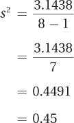

3.2 Variability
89
 StatClips: Exploratory Pictures for Quantitative DataVideo on LaunchPad
StatClips: Exploratory Pictures for Quantitative DataVideo on LaunchPad
Statisticians define variability as how much spread there is in a set of scores. Spread refers to how much the scores cluster together or how much they stretch out over a wider range. For an example of this, see Figure 3.7. The curve on the left shows a more tightly clustered set of scores, and the curve on the right shows a data set with more variability in scores.
Both measurements—central tendency and variability—are important in describing a set of scores. The need for both measurements was made clear at the start of the chapter with Darren and Marcie, the two students with the same GPA. There are two facts about them—(1) their GPAs were 3.00, and (2) they achieved this either by getting all B’s or by a mixture of A’s and C’s. The first statement gives information about central tendency, and the second gives information about variability. Both statements offer useful information.
Statisticians have developed a number of ways to summarize variability. The remainder of this chapter will be used to explore four measures of variability: range, interquartile range, variance, and standard deviation. These four measures of variability all make use of the distance between scores, so they are appropriate for use with interval- or ratio-level data, but not with nominal or ordinal data.
Range and Interquartile Range
The simplest measure of variability is the range, the distance from the lowest score to the highest score. In Figure 3.7, notice how the range of scores, marked by a double-headed arrow below the X-axis, is greater for the set of scores on the right. The formula for the range, which says to subtract the smallest score from the largest score, appears in Equation 3.3.
Equation 3.3 Formula for Range
Range = XHigh – XLow
where Range = distance from lowest score to highest score
XLow = the smallest value of X in the data set
XHigh = the largest value of X in the data set
90
For the height data, here is the calculation for range:
Range = 73 – 62 = 11.00
The range is a single number, so the range for the height data would be reported as 11.00. This makes it easy to compare amounts of variability from one set of data to another. If the value for the range is greater for data set A than it is for data set B, then data set A has more variability.
There is a problem with using the range as a measure of variability. The range depends only on two scores in the data set, the top score and the bottom score, so most of the data are ignored. This means that the range is influenced by extreme scores even more than the mean. If all 107″ of Robert Wadlow joined the sample, the range would jump from 11.00″ to 45.00″. That’s a 34-inch change in the range as the result of adding just one case.
The influence of outliers can be reduced by removing extreme scores before calculating the range. The only question is how many scores to trim. The most common solution is to trim the bottom 25% of scores and the top 25% of scores. Then, the range is calculated for the middle 50% of the scores. This is called the interquartile range (abbreviated IQR).
The interquartile range is called the interquartile range because data sets can be divided into four equal chunks, called quartiles. Each quartile contains 25% of the cases. The interquartile range represents the distance covered by the middle two quartiles, as shown in Figure 3.8.
As with the range, the interquartile range is a single number. However, range is often reported as two scores—the lowest value and the highest value in the data set. Following a similar format—reporting the interquartile range as two scores—makes it a statistic that does double duty. The two scores provide information about both variability and central tendency. Knowing how wide the interval is indicates how much variability is present—the wider the interval, the larger the amount of variability. Knowing the values of the interval tells us where the average scores fall. To illustrate this point, let’s look at an example that will be familiar to most students.
In the search for colleges, students often encounter the interquartile range without realizing it. Many colleges use the interquartile range in reporting SAT or ACT scores for their students, often calling it something like “25th–75th percentile” or “middle 50%.”
When the interquartile is reported as a single number, it gives useful comparative information about variability. In a list of the best research universities, the interquartile ranges for the combined SAT scores of students at the schools were reported (www.satscores.us). Schools at the top of the list had interquartile ranges about 280 SAT points wide and those at the bottom of the list had interquartile ranges about 360 SAT points wide.* This indicates that more variability in SAT performance exists among the students at the lower-ranked schools than among students at the upper-ranked schools. Professors at the lower-ranked schools can expect a wider range of skills in their classrooms than would be found at an upper-ranked school.
* Note: These figures are based on the three-section SAT in use prior to 2016. Beginning March 2016, the SAT includes only two sections, Reading/Writing and Math.
91
When the interquartile range is reported as two scores, it functions as a measure of central tendency because it reveals the interval that captures the average students—the middle 50%. For example, the upper-ranked schools have an interquartile range for combined SAT scores that ranges from 2,100 to 2,380, while the lower-ranked schools’ interquartile range goes from 1,170 to 1,530. One can see that the average students at the top schools did almost 1,000 points better in terms of combined SAT scores than the average students at the lower-ranked schools. The interquartile range is a helpful descriptive statistic because it provides information about variability and central tendency.
Variability in Populations
So far, variability has only been calculated for samples of cases. Now, let’s consider variability in populations, the larger groups from which samples are drawn. For example, the demographer’s sample of five adult Americans is a subset of the more than 200 million adult Americans. Just as there is variability for height in the sample of five adults, there is variability for height in the population. In fact, more variability should occur in the population than in the sample. The shortest person in the sample is 5′ 2″ and the tallest is 6′ 1″. Aren’t there American adults who are shorter than 5′ 2″ and who are taller than 6′ 1″? Of course. Populations almost always have more variability than samples do.
Variability exists in populations, but there is a practical problem in measuring it. When the population is large, one can’t measure everyone. If it took just a minute to measure a person’s height, it would take more than 300 years—working 24/7—to measure the heights of all 200 million American adults. That would be impossible. Except in rare situations, variability can’t be calculated for a population. Nonetheless, as we’ll see in the next section, the idea that there is a population value for variability is an important one.
Population Variance
The variance and the standard deviation use information from all the cases in the data set. As a result, they are better measures of variability in the whole data set.
Remember deviation scores from earlier in this chapter? Deviation scores are used to calculate variance and standard deviation. The variance is the mean squared deviation score and a standard deviation is the square root of the variance. In essence, a standard deviation tells the average distance by which raw scores deviate from the mean.
The variance and standard deviation have a big advantage over the range and interquartile range. The range and interquartile range use limited information from a data set. For example, the range only uses the case with the highest score and the case with the lowest score, ignoring variability information from all the other cases. In contrast, the variance and the standard deviation use information from all the cases in the data set. As a result, they are better measures of variability in the whole data set.
92
Deviation scores represent the amount of distance a score falls from the mean. With data from a whole population, deviation scores would be calculated by subtracting the population mean, μ, from the raw scores:
Population deviation score = X – μ
To understand how deviation scores measure variability, examine the two distributions in Figure 3.7 on page 89. The distribution on the right has more variability, a greater range of scores, than is found in the distribution on the left. Said another way, the scores are less tightly clustered around the mean in the distribution on the right than they are in the distribution on the left. The distribution on the right has some cases that fall farther away from the mean and these will have bigger deviation scores. Deviation scores serve as a measure of variability, and bigger deviation scores mean more variability.
If deviation scores are measures of variability and there is a deviation score for each case in the population, then how is the size of the deviation scores summarized? The obvious approach is to find the average deviation score by adding together all the deviation scores and dividing this sum by the number of scores. Unfortunately, this doesn’t work. Remember, the mean balances the deviation scores, so the sum of a set of deviation scores is always zero. As a result, the average deviation score will always be zero no matter how much variability there was in the data set.
To get around this problem, statisticians square the deviation scores—making them all positive—and then find the average of the squared deviation scores. The result is the variance, the mean squared deviation score. For a population, variance is abbreviated as σ2 (σ is the lowercase version of the Greek letter sigma; σ2 is pronounced “sigma squared”). The formula for calculating population variance is shown in Equation 3.4.
Equation 3.4 Formula for Population Variance (σ2)
where σ2 = population variance
X = raw score
μ = the population mean
N = the number of cases in the population
This formula for calculating population variance requires four steps: (1) first, create deviation scores for each case in the population by subtracting the population mean from each raw score; (2) then, square each of these deviation scores; (3) next, add up all the squared deviation scores; and (4) finally, divide this sum by the number of cases in the population. The result is σ2, the population variance.
Population Standard Deviation
Interpreting variance can be confusing because it is based on squared scores. The solution is simple: find the square root of the variance. The square root of the variance is called the standard deviation, and it transforms the variance back into the original unit of measurement. The standard deviation is the most commonly reported measure of variability. For a population, the standard deviation is abbreviated as σ. The formula for calculating a population standard deviation is shown in Equation 3.5.
93
Equation 3.5 Formula for Population Standard Deviation(σ)
where σ = population standard deviation
σ2 = population variance (Equation 3.4)
A standard deviation gives information about the average distance that scores fall from the mean.
A standard deviation tells how much spread, or variability, there is in a set of scores. If the standard deviation is small, then the scores fall relatively close to the mean. As standard deviations grow larger, the scores are scattered farther away from the mean. A standard deviation gives information about the average distance that scores fall from the mean.
Calculating Variance and Standard Deviation for a Sample
Population variance and population standard deviation are almost never known because it is rare that a researcher has access to all the cases in a population. Researchers study samples, but they want to draw conclusions about populations. In order to do so, they need to use population values in their equations. To make this possible, statisticians have developed a way to calculate variance and standard deviation for a sample and to “correct” them so that they are better approximations of the population values. The correction makes the sample variance and sample standard deviation a little bit larger.
Why does the correction increase the size of the sample variance and sample standard deviation? Because there is more variability in a population than in a sample. To visualize this, imagine a big jar of jellybeans of different colors and flavors. The jar is the population. Fernando comes along, dips his hand in, and pulls out a handful. The handful is the sample. Now, Fernando is asked how many different colors he has in his hand. The number of colors is a measure of variability. Fernando’s handful probably includes a lot of different colors. But, given the size of the jar, it is almost certain that there are some colors in the jar that are missing from his sample. More variability exists in the population than was found in the sample, so a sample measure of variability has to be corrected to reflect this.
94
The formula for calculating sample variance is shown in Equation 3.6. Sample variance is abbreviated s2, pronounced “s squared” and sample standard deviation is abbreviated s. (s is used because sigma, σ, is the Greek letter “s.”)
Equation 3.6 Formula for Sample Variance (s2)
where s2 = sample variance
X = raw score
M = the sample mean
N = the number of cases in the sample
To calculate sample variance, make a table with all the data in it. As seen in Table 3.7, the data go in the first column, with each raw score on a separate row. It doesn’t matter whether the data are in order or not. The table should have three columns. Once the table is ready, follow this four-step procedure to calculate s 2, the sample variance. Here’s an example finding the variance for the heights in the demographer’s sample of five adult Americans:
Step 1 Subtract the mean from each score in order to calculate deviation scores. This is shown in the second column in Table 3.7. For the height data, the mean is 67.00. Here is the calculation of the deviation score for the case in the first row with a raw score of 62:
62 – 67.00 = –5.00
Step 2 Take each deviation score and square it. This is shown in the third column in Table 3.7. In the first row, the deviation score of –5.00 becomes 25.00 when squared.
Step 3 Add up all the squared deviation scores. This is called a sum of squares, abbreviated SS, because that is just what it is—a sum of squared scores. At the bottom of the third column is ∑, a summation sign. Adding together all the squared deviation scores in Table 3.7 totals to 70.00.
95
Step 4 The final step involves taking the sum of the squared deviation scores (70.00) and dividing it by the number of cases minus 1 to find the sample variance.
And, that’s the answer. The demographer would report the sample variance for the five Americans as s2 = 17.50. With variances, bigger numbers mean more variability. Without another variance for comparison, it is hard to say whether this sample variance of 17.50 means there is a lot of variability or a little variability in this sample.
Wondering where the “correction” is that makes this sample variance larger and a better estimate of the population value? It is in the denominator, where 1 is subtracted from N, the number of cases. This subtraction makes the denominator smaller, which makes the quotient, s2, larger, making the sample variance a better estimate of σ2.
Once the sample variance, s2, has been calculated, it is straightforward to calculate s, the sample standard deviation. The formula for the sample standard deviation is shown in Equation 3.7.
Equation 3.7 Formula for Sample Standard Deviation (s)
where s = sample standard deviation
s2 = sample variance (Equation 3.6)
As s2 = 17.50 for the five heights, here is the calculation for the standard deviation for the sample:

The demographer would report the standard deviation of the sample as s = 4.18. Often, means and standard deviations are used together to describe central tendency and variability for data sets. For the sample of five Americans, the demographer would describe them as having a mean height of 67.00 inches with a standard deviation of 4.18 inches, or she might write M = 67.00″ and s = 4.18″.
Means are easy to interpret—readers of the demographer’s report will have some sense of what an average height of 5′ 7″ looks like—but most people don’t have an intuitive sense of how to interpret standard deviations. One can think of a standard deviation as revealing the distance a score, on average, falls from the mean, but does a standard deviation of 4.18″ mean there is a lot of variability in the sample or a little? For now, just remember that bigger standard deviations mean more variability. If someone else had a different sample and reported that s = 5.32, then his sample would have more variability in height than the original demographer’s sample, where s = 4.18. The scores in the second sample would tend to fall, on average, a little farther away from the mean.
96
Worked Example 3.2
Remember Dr. Gorham, the psychologist who collected data about the number of aggressive comments that third graders made to a Bobo doll after seeing an adult physically attack it? The raw scores were 2, 3, 4, 4, 4, 5, 5, 6, 7, 9 and the mean was 4.90. Let’s use these data to practice calculating the sample variance and sample standard deviation.
Once the data are in a table, calculating the sample variance follows four steps. Here, the data in Table 3.8 are listed in order from low to high, but the procedure still works if they are not in order.
The first step involves calculating deviation scores (e.g., 2 – 4.90 = –2.90).
The next step is squaring the deviation scores. For the first row, this is –2.902 = 8.41.
For the third step, sum the squared deviation scores (e.g., 8.41 + 3.61 + 0.81, etc.) and find the total (∑ = 36.90, shown at the bottom of column 3).
Finally, for Step 4, divide the sum of the squared deviations by the number of cases minus 1 to find the sample variance:
Once the variance has been calculated, it is easy to find the standard deviation by taking its square root:

When asked to use central tendency and variability to describe this sample, Dr. Gorham would say that these 10 third graders made a mean of 4.90 aggressive comments to Bobo, with a standard deviation of 2.02 comments. He could report this as M = 4.90 and s = 2.02.
97
Practice Problems 3.2
Review Your Knowledge
3.07 What does it mean when one set of scores has more variability than another set?
3.08 What is a disadvantage of the range as a measure of variability?
3.09 What is an advantage of the interquartile range as a measure of variability?
3.10 What is an advantage of the variance and standard deviation over the range and interquartile range as measures of variability?
Apply Your Knowledge
3.11 A clinical psychologist took 12 people who were diagnosed with depression and gave them an interval-level depression scale. On this scale, scores above 70 are considered to be indicative of clinical depression. Here are the 12 scores: 65, 81, 66, 83, 70, 70, 72, 60, 78, 78, 79, and 84. What is the range?
3.12 The American Association of Organic Apple Growers took a sample of five family farms and determined how large, in acres, the orchards were. The results were 23, 8, 22, 10, and 32 with a mean of 19.00. Calculate (a) sample variance and (b) sample standard deviation for the size, in acres, of the five orchards.
Application Demonstration
A psychologist took a sample of eight rats and trained them to run a maze in order to find food in a goal box. After they were well trained, she timed how long it took them, in seconds, to run the maze. Here are the data she collected: 4.73, 6.54, 5.88, 4.68, 5.82, 6.01, 5.54, and 6.24. She wants to report a measure of central tendency and variability for the sample.
Central Tendency
The data, time in seconds, are measured at the ratio level, so she can use a mean as her measure of central tendency. But, she should consider the shape of the data set before committing to the mean. Figure 3.9 shows a histogram for the maze running times.
Figure 3.9 doesn’t illustrate anything unusual in terms of shape. The sample size is small, but there is nothing obviously odd in terms of modality or skew, so she can proceed with calculating the mean. Using Equation 3.1, she should sum all the scores and divide by the number of cases to find the mean:
98
The mean time to run the maze is 5.68 seconds.
Variability
The most often reported measure of variability is the standard deviation, s. To calculate s, she completes Table 3.9 to lead her through the first four steps involved in calculating the sample variance (Equation 3.4).
Step 1 involves listing the scores and that is easy to do. Using the mean, 5.68, she can complete the second step and calculate deviation scores (see the second column in Table 3.9). Column 3 shows the squared deviation scores, whereas the bottom of column 3 gives the sum of the squared deviation scores, 3.1438.
For Step 5, she uses the sum of the squared deviation scores to calculate the sample variance:

To find the sample standard deviation, she applies Equation 3.7:
She would report central tendency as a mean maze running time of 5.68 seconds, with a sample standard deviation of 0.67. Following APA format, she could write M = 5.68″ and s = 0.67″.
99
DIY
Did you save the grocery receipt you used in the rounding DIY for Chapter 1? Now we are going to use it to calculate how much your average grocery item costs. Price is a ratio-level variable, so you could calculate mean, median, or mode as an average. Which should you do?
We would like to calculate the mean because it uses interval and ratio data that contain more information, but does the shape of the sample allow that? What should you do if most of your sample falls in the $2–$5 range and one or two items are in the $10–$15 range?
Calculate all three measures and compare them. Could you calculate a mode? Which measure should you report and why?
And, what should you do for a measure of variability?